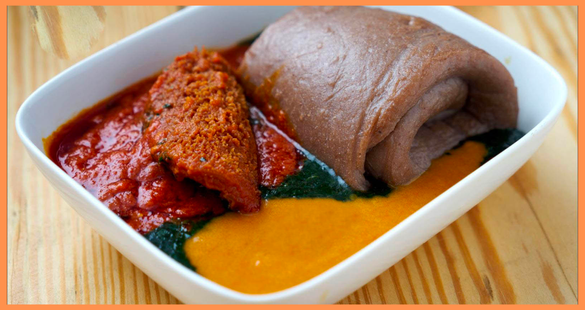

Home
Amala Recipes

Description
Amala is a popular Nigerian dish, particularly among the Yoruba people, made from yam flour, cassava flour, or unripe plantain flour. The most common type is made from yam flour, which gives it a smooth, stretchy, and slightly elastic texture. To prepare Amala, the flour is gradually added to boiling water and stirred continuously until it forms a thick, dough-like consistency.
It is typically served with rich, flavorful soups such as ewedu (a slimy soup made from jute leaves), gbegiri (bean soup), or obe ata (a spicy stew made with tomatoes, peppers, and assorted meats or fish). The combination of the soft, slightly tangy Amala and the hearty soups creates a satisfying and deeply cultural meal, often enjoyed with hands for an authentic experience. It’s a staple in many Nigerian households and is cherished for its simplicity and versatility.
Ingredients
- For Amala:
- For Ewedu Soup:
- Ewedu leaves (jute leaves)
- Water
- Locust beans (iru)
- Bouillon cubes or seasoning powder
- Salt
- Potash (kaun)
- For Gbegiri Soup:
- Brown beans (black-eyed peas can also be used)
- Palm oil
- Onions
- Pepper
- Bouillon cubes or seasoning powder
- Salt
- Meat or fish stock
- For Stew (Obe Ata):
- Tomatoes
- Bell peppers (tatashe)
- Scotch bonnet peppers (rodo)
- Onions
- Palm oil or vegetable oil
- Assorted meats and fish
- Bouillon cubes or seasoning powder
- Salt
- Optional Add-ons
Steps
- For Amala:
- flour (elubo): This is the main ingredient, made from dried yam that has been ground into a fine powder. You can also use cassava flour or unripe plantain flour as alternatives.
- Water: For boiling and mixing the flour.
- For Ewedu Soup:
- Ewedu leaves (jute leaves): Fresh or frozen.
- Water: For boiling the leaves.
- Locust beans (iru): Fermented locust beans for flavor (optional but traditional).
- Bouillon cubes or seasoning powder: For added taste.
- Salt: To taste.
- Potash (kaun): A small amount dissolved in water to give the soup its signature slimy texture (optional).
- For Gbegiri Soup:
- Brown beans (black-eyed peas can also be used): Peeled and boiled until soft.
- Palm oil: For richness and color.
- Onions: Chopped for flavor.
- Pepper: Fresh or dried chili peppers for heat.
- Bouillon cubes or seasoning powder: For added taste.
- Salt To taste.
- Meat or fish stock: For added depth of flavor (optional).